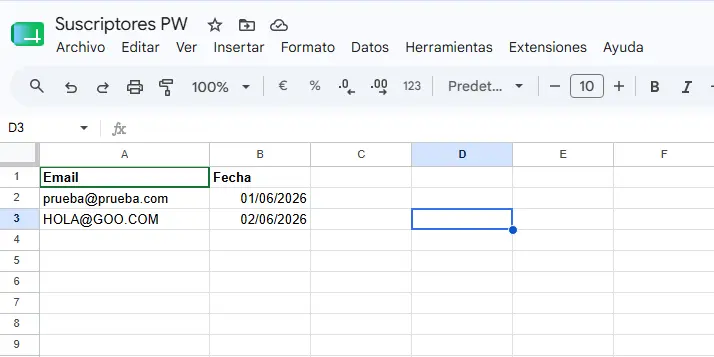
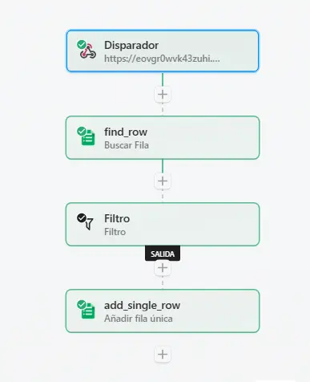
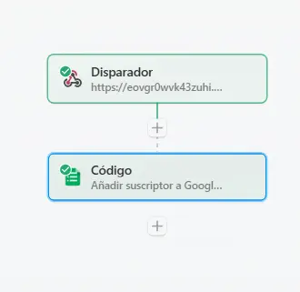

Automatización visual frente a eficiencia técnica.
En el mundo de la automatización de procesos, las herramientas No-Code y Low-Code nos prometen el cielo: conectar una API con otra arrastrando bloques visuales en cinco minutos. Y es verdad, para prototipar un Producto Mínimo Viable (MVP) es fantástico. Sin embargo, cuando miras las integraciones con ojos de Ingeniero de Soluciones Web, el abuso de los bloques visuales esconde dos grandes enemigos: la latencia y la falta de control de errores.
Hoy quiero mostrarles un caso práctico basado en un flujo real de captación de suscriptores, y cómo pasé de una estructura visual clásica de 4 pasos a un único bloque de código en Node.js, ganando velocidad y robustez sin gastar de más.
La Arquitectura Inicial: El enfoque 100% Visual
Imaginemos un flujo estándar para registrar leads o suscriptores desde una web personalizada hacia una hoja de cálculo previamente creada en Google Drive.

En Pipedream, la estructura visual típica se ve así:
-
Disparador (Webhook): Recibe el correo del usuario, la fecha y la dirección IP.
-
Acción (find_row): Hace una petición a la API de Google Sheets para buscar si el correo ya existe.
-
Filtro: Bloque lógico que detiene el flujo si el correo ya está registrado.
-
Acción (add_single_row): Si pasa el filtro, inserta la nueva fila en la hoja.

La Solución: Centralizar la lógica en un solo hilo de Node.js
Para solucionar esto, podemos unificar los pasos de búsqueda, filtrado e inserción dentro de un único componente de Node.js. Al utilizar la librería oficial de Google APIs (que ya viene integrada de forma nativa en la plataforma), realizamos las operaciones directamente en memoria.
Aquí está el script optimizado para producción:
import google_sheets from "@pipedream/google_sheets"
export default defineComponent({
name: "Add Subscriber to Google Sheet",
description: "Adds a new email subscriber to a Google Sheet, checking for duplicates first",
type: "action",
props: {
google_sheets,
email: {
type: "string",
label: "Email",
description: "Email address to add to the sheet"
},
fecha: {
type: "string",
label: "Date",
description: "Date of subscription"
},
client_ip: {
type: "string",
label: "Client IP",
description: "IP address of the client",
optional: true
},
spreadsheet_id: {
type: "string",
label: "Spreadsheet ID",
description: "ID of the Google Sheet to update",
default: "COPIAR URL DESPUES DE: /d/ Y ANTES DE: /edit"
},
range: {
type: "string",
label: "Range",
description: "Range to append data to",
default: "Sheet1!A:B"
}
},
async run({ $ }) {
try {
// Read existing rows to check for duplicates
const response = await this.google_sheets.getSpreadsheetValues(
this.spreadsheet_id,
this.range
);
const rows = response.values || [];
// Check if email already exists in the first column
const yaExiste = rows.some(row => row[0] && row[0].toLowerCase() === this.email.toLowerCase());
// If email already exists, exit early
if (yaExiste) {
$.export("$summary", `Email ${this.email} is already registered`);
return {
status: "skipped",
message: `El correo ${this.email} ya está registrado.`
};
}
// Add new subscriber to the sheet
const appendResponse = await this.google_sheets.addRowsToSheet({
$,
spreadsheetId: this.spreadsheet_id,
range: this.range.split('!')[0], // Extract sheet name from range
rows: [[this.email, this.fecha, this.client_ip]]
});
$.export("$summary", `Successfully added subscriber ${this.email} to the sheet`);
return {
status: "success",
message: `Suscriptor ${this.email} añadido correctamente.`,
updates: appendResponse
};
} catch (error) {
$.export("$summary", `Failed to add subscriber: ${error.message}`);
throw new Error(`Fallo en la comunicación con Google Sheets: ${error.message}`);
}
}
})Quedando de la siguiente manera:

Las 3 ventajas que obtienes como Desarrollador
Al adoptar este enfoque basado en código dentro de tus plataformas de automatización, elevas la calidad de tus soluciones web:
-
Reducción drástica de la latencia: Al eliminar intermediarios visuales, la lógica corre de forma fluida en un único contenedor serverless. Menos saltos de red equivalen a una respuesta más rápida.
-
Control de excepciones real (try/catch): Si la API de Google Sheets experimenta degradación o un error 500, el bloque de código captura la excepción de inmediato. Puedes programar alertas personalizadas hacia Slack o logs internos en lugar de que el flujo simplemente "explote" de forma genérica.
-
Mantenibilidad y Escalabilidad: Si el día de mañana el negocio exige que, además de guardar en Google Sheets, se verifique si el email pertenece a un dominio temporal o se dispare un webhook hacia un CRM local, expandir el código es limpio, ordenado y escalable. Tu flujo no se convertirá en una telaraña inmanejable de cajitas visuales.
Entorno de Pruebas (Sandbox) vs. Producción Empresarial
Una última lección de arquitectura: las capas gratuitas de herramientas como Pipedream son excelentes laboratorios de pruebas (Sandbox). Te permiten maquetar la solución, testear las APIs de tus clientes y validar el código sin infraestructura propia ni costes iniciales.
Si el volumen de datos de una gran empresa sobrepasa los límites del plan gratuito, tienes la flexibilidad absoluta. Al haber desarrollado la solución con Node.js puro y librerías estándar, puedes escalar al plan premium de la plataforma o copiar este mismo script y moverlo a una AWS Lambda o Google Cloud Function en cuestión de minutos. Tu lógica de negocio ya no está secuestrada por la interfaz de un tercero.
Como BONUS EXTRA si usas Pipedream, recuerda que una arquitectura de integración limpia es el motor invisible de tu negocio. Mantener tus flujos optimizados y libres de latencia no solo reduce el consumo de recursos, sino que garantiza que tus datos fluyan con la velocidad y robustez que una operación profesional exige.